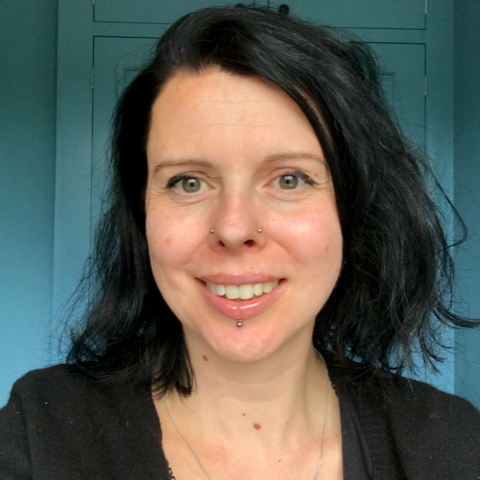

Holly Cummins
Holly Cummins is a Senior Principal Software Engineer on the Red Hat Quarkus team. Before joining Red Hat,
Holly was a long time IBMer, in a range of roles from cloud consultant, full-stack javascript developer,
WebSphere Liberty devops architect, JVM performance engineer, to innovation leader. Holly led projects for enormous banks,
tiny startups, and everything in between. Holly has used the power of cloud to understand climate risks, count fish,
help a blind athlete run ultra-marathons in the desert solo, and invent stories (although not at all the same time).
Holly is also a Java Champion, author, and regular keynote speaker.

Tomer Gabel
A programming junkie and computer history aficionado, Tomer's been an avid software professional for almost two decades,
during which he's built any number of (predominantly back-end) systems, cofounded two major Israeli user groups
(Java.IL and Underscore), organized an annual Scala conference (Scalapeño) and is a recurring speaker at software conferences.
Plying his trade as a gun-for-hire at Substrate, he secretly still hopes to realize his childhood dream of becoming a lion tamer.